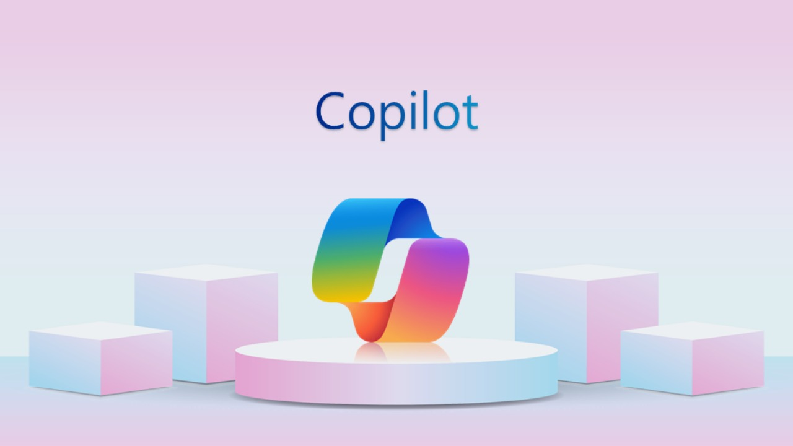

Windows Copilot
1. Đặc trưng nổi bật
Copilot là một công cụ lập trình tiên tiến được phát triển bởi OpenAI, hỗ trợ lập trình viên bằng cách tự động gợi ý và hoàn thành mã nguồn trong thời gian thực. Với sự tích hợp sâu vào các IDE phổ biến, Copilot có khả năng hiểu ngữ cảnh lập trình, gợi ý đoạn mã phù hợp, và thậm chí viết các hàm phức tạp dựa trên mô tả tự nhiên.
Đặc trưng nổi bật Copilot:
Copilot – người bạn đồng hành lý tưởng cho các lập trình viên, giúp tăng tốc quy trình phát triển phần mềm và giảm thiểu lỗi lập trình.
2. Ưu điểm
- Tăng năng suất: Hỗ trợ tự động gợi ý mã nguồn, tiết kiệm thời gian và công sức.
- Học hỏi liên tục: Cải thiện đề xuất dựa trên ngữ cảnh và phong cách lập trình của người dùng.
- Hỗ trợ nhiều ngôn ngữ: Phù hợp với nhiều ngôn ngữ lập trình như Python, JavaScript, Go, C++, v.v.
- Tích hợp dễ dàng: Có thể tích hợp với các IDE phổ biến như Visual Studio Code, JetBrains, và Neovim.
Ưu điểm Copilot:
Copilot không chỉ là một công cụ mà còn là trợ lý thông minh, giúp lập trình viên tập trung vào những phần phức tạp hơn của dự án.
3. Nhược điểm
- Phụ thuộc vào ngữ cảnh: Chỉ hoạt động hiệu quả khi ngữ cảnh lập trình được cung cấp đầy đủ.
- Chi phí: Cần trả phí để sử dụng đầy đủ các tính năng.
- Không thay thế được kỹ năng lập trình: Dù mạnh mẽ, Copilot không thể thay thế hoàn toàn kinh nghiệm và sự sáng tạo của lập trình viên.
4. Chi phí theo gói sử dụng
- Miễn phí: Dành cho sinh viên và dự án mã nguồn mở.
- Gói cá nhân: $10/tháng hoặc $100/năm – phù hợp cho các lập trình viên cá nhân.
- Gói doanh nghiệp: Tùy chỉnh chi phí – cung cấp tính năng nâng cao cho đội ngũ lập trình.
Chi phí theo gói sử dụng Copilot:
Lựa chọn phù hợp với nhu cầu từ cá nhân đến doanh nghiệp.